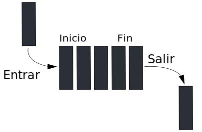

Curso de PHP
Funciones de arrays I
Por Jesús Ruiz-Ayúcar / @chuso
is_array()
Averiguar si estamos ante un array
Ejemplos
$var1 = array(1,2,3,5,7,11,13,17);
$var2 = "¿Array de letras?"; // echo $var2[1]; muestra 'A'
$var3 = array('uno' => 1, 'dos' => 2, 'tres' => 3);
is_array($var1); // TRUE
is_array($var2); // FALSE
is_array($var3); // TRUE
Contar elementos
count()
$var1 = array(1,2,3,5,7,11,13,17);
$var2 = "¿Array de letras?"; // echo $var2[1]; muestra 'A'
$var3 = array('uno' => 1, 'dos' => 2, 'tres' => 3);
echo count($var1); // Muestra 8
echo count($var2); // Muestra 1 (no es un array)
echo count($var3); // Muestra 3
Visualizar un array
print_r() y var_dump()
Muestran un array de forma legible por humanos. var_dump() muestra además información acerca de los tipos de datos.
$var = array('uno' => 1, 'dos' => 2, 'tres' => 3);
print_r($var);
Muestra:
Array
(
[uno] => 1
[dos] => 2
[tres] => 3
)
Iniciar un array
Array indexado:
$x = array(5,12,15);
// Desde PHP 5.4:
$x = [5,12,15];
Array asociativo:
$x = array('xml' => 'eXtensible Markup Language');
// Desde PHP 5.4:
$x = ['xml' => 'eXtensible Markup Language'];
Pregunta de nota. ¿Cuántos elementos tiene este array?
$x = ['1' => 'A', 1 => 'B', 'C', 2 => 'D'];
echo count($x);
range()
Función que rellena un array con un rango de números.
Ejemplos:
$array = range(0,10); // array(0,1,2,3,4,5,6,7,8,9,10)
$array = range(0,10,2); // array(0,2,4,6,8,10)
$array = range(10,0,-1); // array(10,9,8,7,6,5,4,3,2,1,0)
// for($i=0; $i<=500; $i++) {
foreach(range(0,500) as $i) {
echo "Iteración $i\n";
}
Añadiendo un elemento
Podemos añadir un único elemento a un array ya existente
Array indexado
$x[] = 6
Array asociativo
$x['html'] = 'Hypertext Markup Language';
array_push()
Añade un elemento al final del array
El entero que devuelve es el número total de elementos del array
$var1 = array('L','M','X','J','V','S');
echo array_push($var1, 'D'); // Muestra un 7
// Genera array("L","M","X","J","V","S","D")
// Es equivalente a $var1[] = "D", solo que nos da el total de elementos
array_unshift()
Añade un elemento al comienzo del array
El entero que devuelve es el número total de elementos del array
$var1 = array('L','M','X','J','V','S');
echo array_unshift($var1, 'D'); // Muestra un 7
// Genera array("D","L","M","X","J","V","S")
Añadir muchos elementos
array_merge()
Combina dos o más arrays
Ejemplos:
$arr1 = array("L","M","X");
$arr2 = array("J","V","S","D");
$arr3 = array("Juan" => 18, "Luis" => 40, "Laura" => 29, "Ángela" => 21);
$arr4 = array("Felipe" => 33, "Laura" => 25, "Pedro" => 36);
$arr5 = array_merge($arr1, $arr2); // "L","M","X","J","V","S","D"
$arr6 = array_merge($arr3, $arr4);
echo $arr6["Laura"]; // Solo se guarda el último valor: 25
Operador +
Combina dos arrays. Pero prevalecen las claves del primero.
$arr1 = array("L","M","X");
$arr2 = array("J","V","S","D");
$arr3 = array("Juan" => 18, "Luis" => 40, "Laura" => 29, "Ángela" => 21);
$arr4 = array("Felipe" => 33, "Laura" => 25, "Pedro" => 36);
$arr5 = $arr1 + $arr2; // "L","M","X","J","V","S","D"
$arr6 = $arr3 + $arr4;
echo $arr6["Laura"]; // Se guarda el primer valor: 29
Eliminar un elemento
array_pop()
Retorna y elimina el último elemento del array
array_shift()
Retorna y elimina el primer elemento del array
Pilas
Estructura de datos que representa una pila (stack), una lista LIFO (Last In First Out - Último en Entrar Primero en Salir).
Como la pila de platos sucios.

En PHP lo implementamos con un elemento de tipo array y las funciones array_push() y array_pop()
Colas
Estructura de datos que representa una cola (queue), una lista FIFO (First In First Out - Primero en Entrar Primero en Salir).
Como la cola del banco.
En PHP lo implementamos con un elemento de tipo array y las funciones array_push() y array_shift()
Resumen
Conceptos aprendidos:
- Cómo averiguar si estamos ante un array:
is_array() - Podemos contar sus elementos:
count() - Visualizamos sus datos:
var_dump()yprint_r() - Creamos arrays indexados, asociativos o mediante
range() - Añadimos un elemento mediante
[], accediendo a la clave, conarray_push()yarray_unshift() - Añadimos muchos elementos con el operador
+o conarray_merge() - Eliminamos elementos con
array_pop()yarray_shift - Cómo definir dos estructuras de datos: pilas y colas.